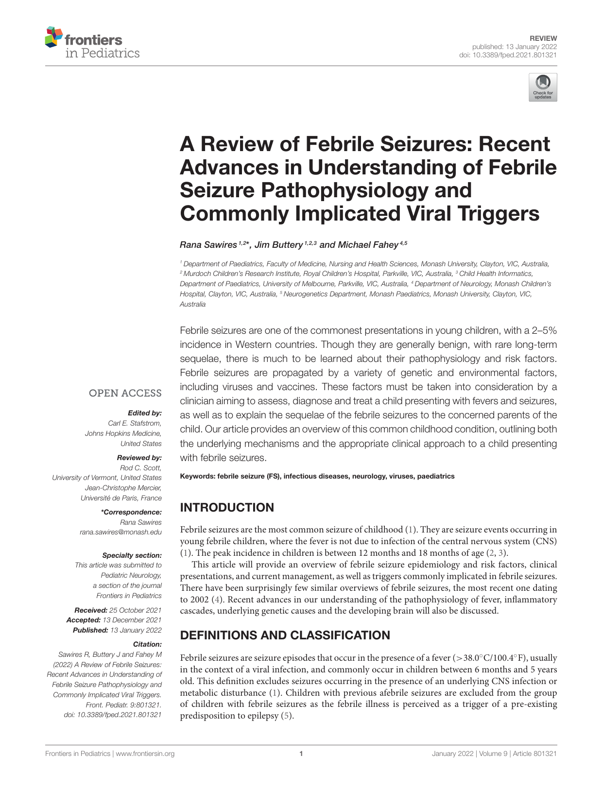

Qual achado de anamnese realmente eleva o risco de epilepsia futura após crise febril? A resposta fecha o satélite no discriminador de prova (complexa + HF + atraso).
📌 Questão-tipo · marque a correta
Sobre as crises febris na infância, assinale a alternativa correta.
ASão causadas por epilepsias.
BTratamento profilático com anticonvulsivante contínuo é sempre recomendado após a primeira crise.
CO risco de epilepsia futura é maior na complexa com história familiar de epilepsia e atraso de desenvolvimento.
DToda crise febril deve ser investigada com punção lombar.
EDiazepam contínuo até 5 anos em todos.
O gabarito
O risco de epilepsia futura é maior em crianças com crises febris complexas + história familiar de epilepsia + atraso de desenvolvimento. A crise febril complexa carrega risco de epilepsia futura maior do que a crise febril típica/simples.
Única resposta coerente com o ensino = alternativa do risco maior na complexa + HF de epilepsia + atraso de desenvolvimento.
Quando a complexa levanta epilepsia de base / atraso / HF, o aprofundamento de síndromes e AED contínuo volta para a espinha de epilepsia. Quando a crise não para ou reentra, o manejo farmacológico de status governa — não o algoritmo de febril simples.
~população geral (+ irrisório / ordem <1% da fonte)
Complexa
Maior que a típica
Complexa + HF epilepsia + atraso DNPM
Maior (gabarito)

Tabela de risco de crise afebril/epilepsia após crise febril (revisão Frontiers in Pediatrics, Table 3). Risk factors predisposing to afebrile seizures and epilepsy following febrile seizure incidence · Sawires R, Buttery J, Fahey M. Front Pediatr. 2022;9:801321. doi:10.3389/fped.2021.801321 · CC BY 4.0 · Fonte: pmc.ncbi.nlm.nih.gov/articles/PMC8793886/ · Labels “complexa + HF + atraso/status neurológico” — Executor; a peça não inventa OR numéricos ausentes nesta tabela.
📌 Resumo operacional
Gabarito = complexa + HF + atraso · distractors = “é epilepsia” / profilaxia sempre / PL em todas / diazepam em todos.
O que a banca quer
Identidade ≠ epilepsia; classificação com 1 critério; PL seletiva; anti-profilaxia; tríade de risco futuro.
🧠 Quiz final
Q1. Comparando simples e complexa quanto ao risco de epilepsia futura:
Q2. Qual fator realmente eleva o risco de epilepsia futura após crise febril?